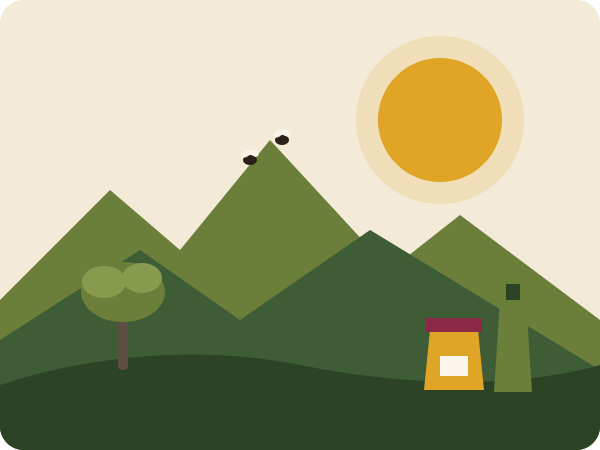

Récolter
Les ruches dans les collines, les olives sur les terrasses familiales, les figues de barbarie cueillies à la main chaque été.
COOPÉRATIVE DE FEMMES - NADOR
Depuis 2013, Thimdrine fait vivre les saveurs du Rif à travers le travail des femmes de la région de Nador.
Récolter - Transformer - Conditionner

Créée en 2013 dans la région de Nador, la coopérative Thimdrine réunit 25 femmes qui récoltent, transforment et conditionnent elles-mêmes leurs produits.
Nos ruches sont installées dans les collines du Rif, le thym sauvage du Rif, et les oliviers poussent sur les terrasses familiales et nos figues de barbarie sont cueillies à la main chaque été.
Les ruches dans les collines, les olives sur les terrasses familiales, les figues de barbarie cueillies à la main chaque été.
Une huile d'olive de première pression à froid et une confiture préparée en petites quantités : chaque produit a son geste.
Les femmes de Thimdrine conditionnent elles-mêmes le miel, l'huile et la confiture, avant de les proposer à votre table.
Découvrez le miel de thym, l'huile d'olive et la confiture préparés par les femmes de Thimdrine.
Découvrir nos produits